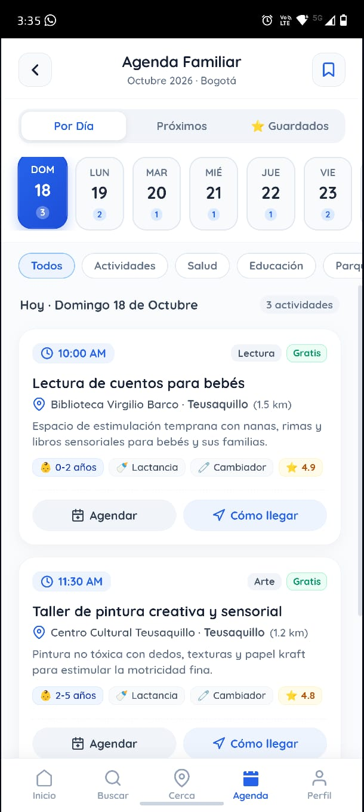
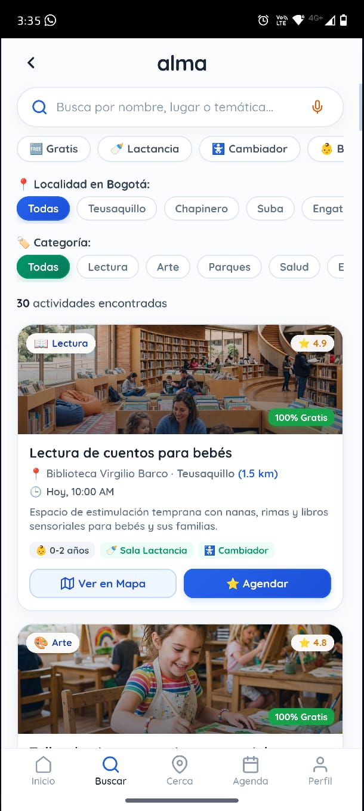
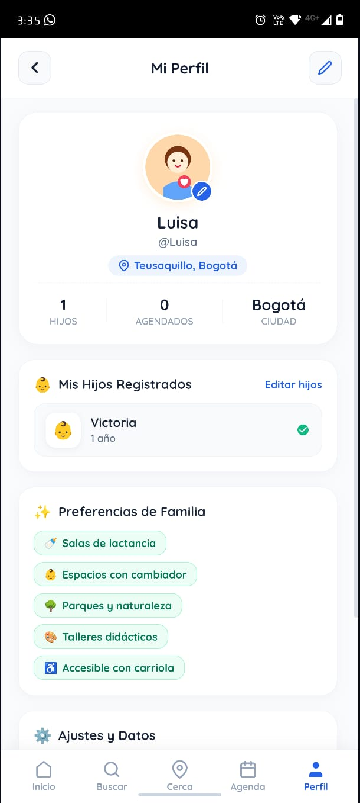
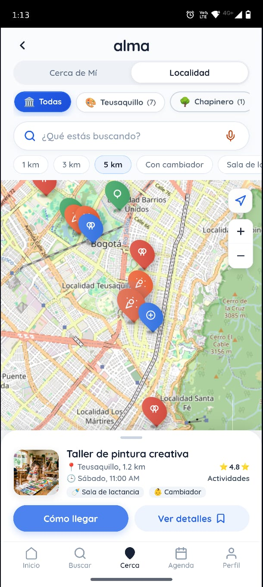

Objetivo
Facilitar el acceso rápido y confiable a espacios seguros y actividades pensadas para la primera infancia, reduciendo la fricción al planear salidas y controles de salud en la ciudad.
Encuentra lo que necesitas, cerca de ti.
ALMA es una aplicación móvil diseñada para acompañar a madres, padres y cuidadores de niños en primera infancia (0 a 5 años) en Bogotá. La plataforma reúne en un solo lugar actividades culturales, talleres de estimulación temprana, parques, bibliotecas y centros de salud cercanos, indicando servicios clave como salas de lactancia, cambiadores, rangos de edad y acceso gratuito.
Explora las pantallas de ALMA una por una.





Facilitar el acceso rápido y confiable a espacios seguros y actividades pensadas para la primera infancia, reduciendo la fricción al planear salidas y controles de salud en la ciudad.
Una interfaz cálida, cercana y fácil de recorrer con una sola mano, organizada en categorías visuales (Niños, Salud, Parques y Actividades), recomendaciones personalizadas, búsqueda inteligente y mapa geolocalizado.
Aplicación funcional compilada para Android con flujo completo: inicio de sesión, registro, inicio personalizado, buscador de actividades, mapa interactivo con sitios emblemáticos de Bogotá, agenda familiar y gestión de perfil.